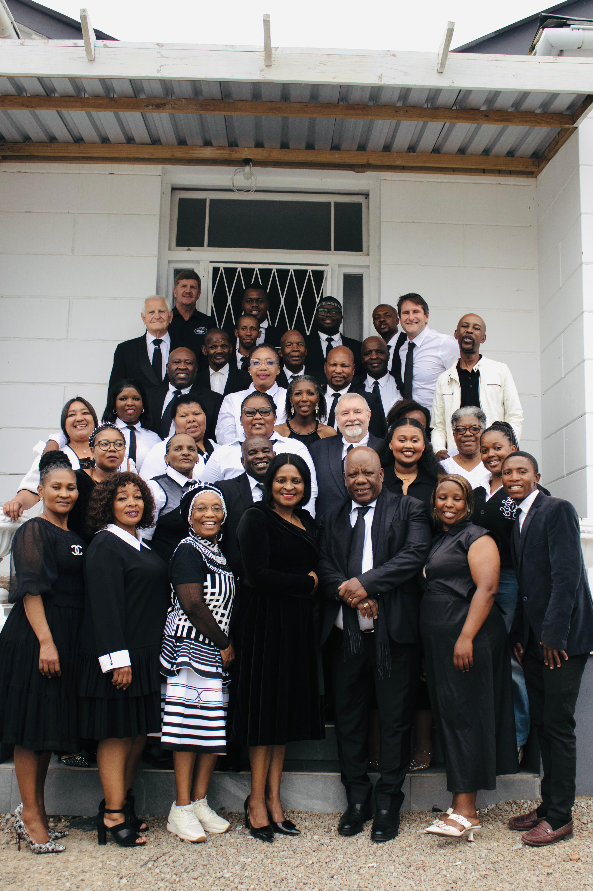
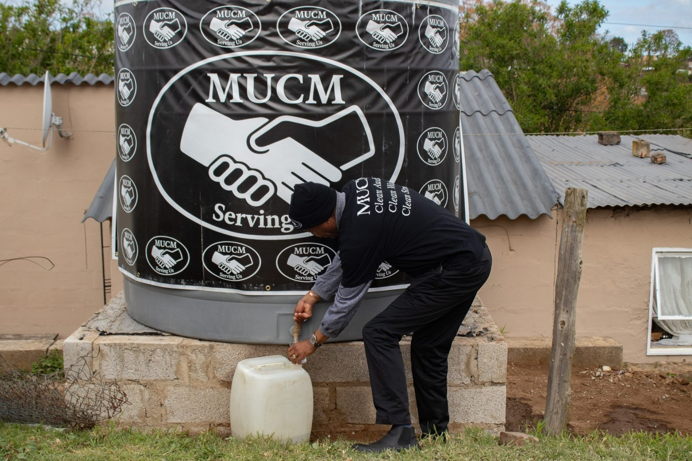
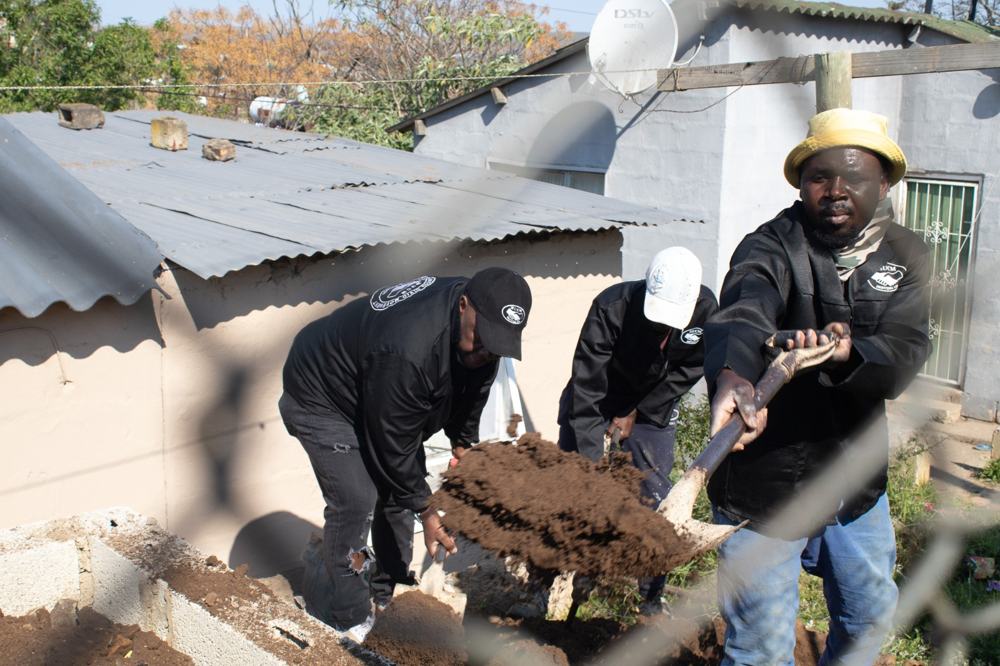
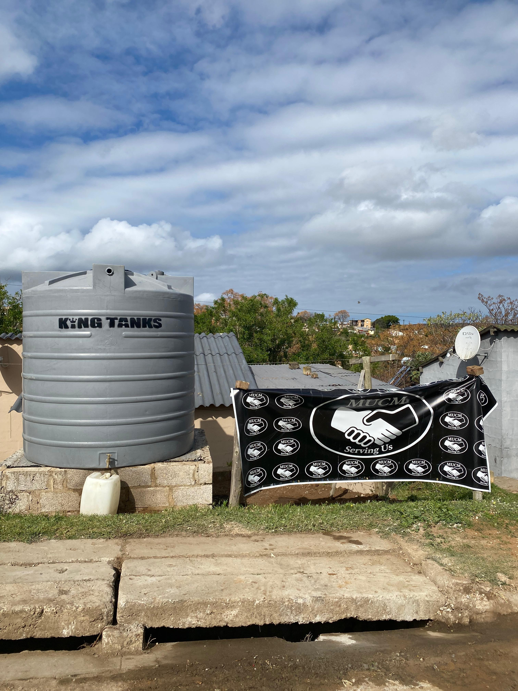
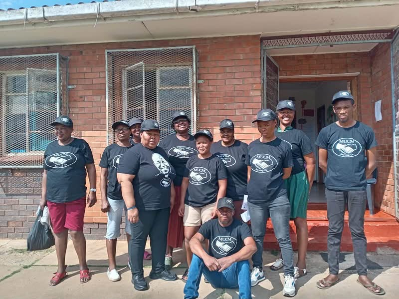
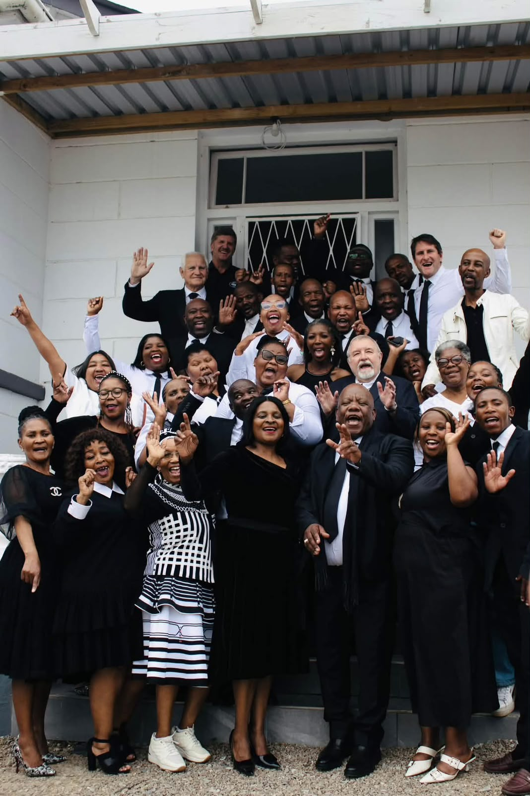
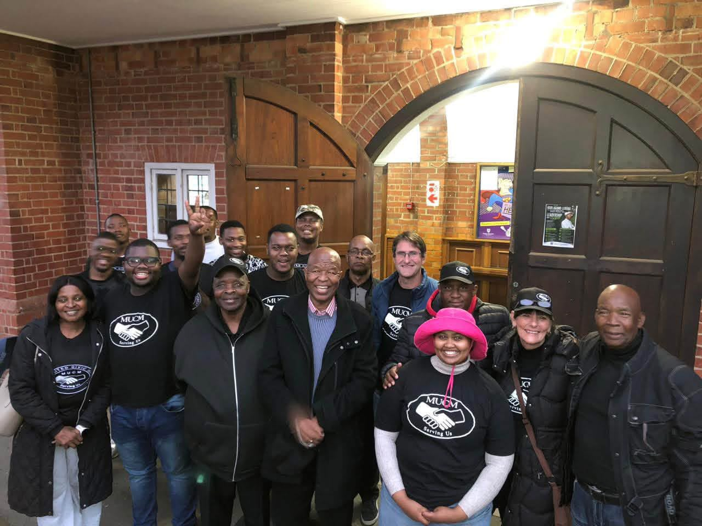
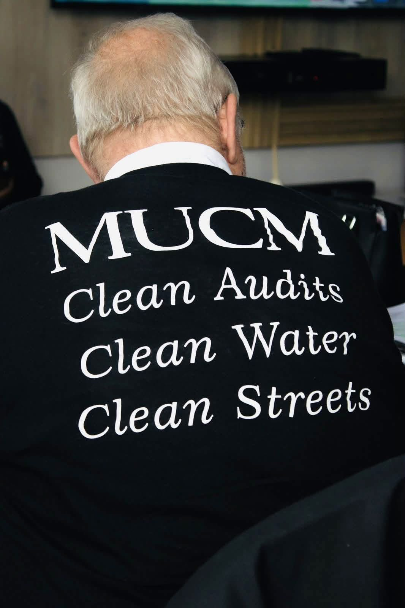
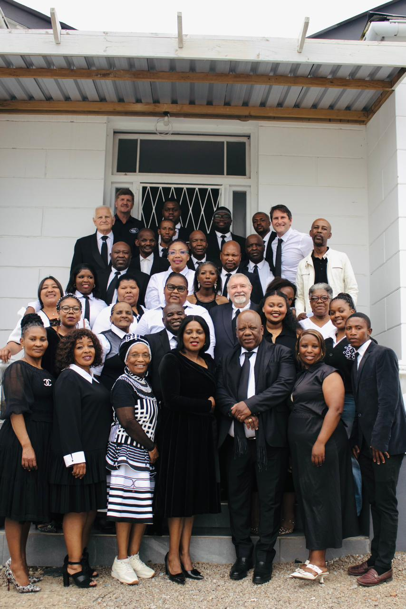
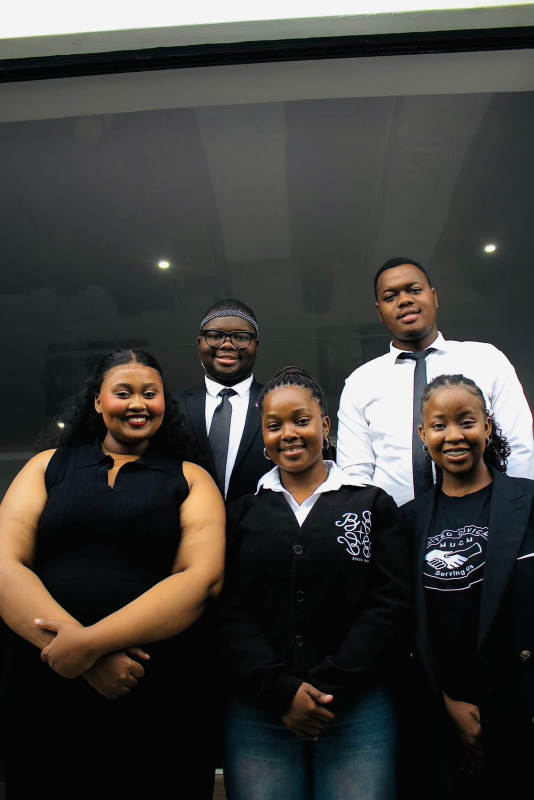

Makana Municipal District · Eastern Cape
Makana United
Civic Movement
"Making Makana Great Again Through Unity, Integrity, and Service"
Simunye — We Are One. Together We Build a Better Makhanda.

Vision
To establish Makhanda as a model of ethical, accountable, and effective local governance that ensures human dignity, promotes social and economic development, and creates a sustainable future for all residents.
Mission
To provide transparent, participatory and professional local governance that prioritises service delivery, human development, economic growth and environmental sustainability while fostering unity, non-racialism and social justice.
Core Values
Ubuntu, Non-racialism, Transparency, Integrity, Service, Excellence, and Sustainability guide all our actions and decisions.
Our Values
The Movement is founded on the following values:
- Ubuntu: Promoting collective prosperity and community solidarity
- Non-racialism: Embracing all residents as equal members of the Makana community
- Transparency: Open and accountable governance at all levels
- Integrity: Ethical leadership free from corruption and self-interest
- Service: Prioritising community needs above personal gain
- Excellence: Striving for the highest standards in all activities
- Sustainability: Ensuring long-term environmental and economic viability
Community Action
Responding to a local need.
Vergenoeg Water Intervention
When the Vergenoeg community faced ongoing water challenges, MUCM took action by providing water storage as a short-term intervention.
MUCM installed and filled a 10,000-litre water tank for community use, with the initiative forming part of the Movement's commitment to addressing essential service challenges in Makhanda.
The project involved members of the MUCM team preparing the foundation, installing the tank and handing it over for community use.



What Kind of Organisation We Are
Non-political. Non-racial. Open to every resident.
The Makana United Civic Movement is a non-profit, non-political and non-racial organisation established to give the people of Makhanda a united platform to take ownership of their town.
Non-Political
Not aligned with any political organisation.
Non-Racial
All residents are part of a united front.
Non-Membership
No application. No fee. Residents are invited to participate.
In the News
What the press is saying about MUCM.
Coverage from Grocott's Mail and other local media.
MUCM steps in with water tanks for dry Vergenoeg
Residents of Vergenoeg have received urgent relief following months of severe water shortages — two water tanks installed by the newly formed Makana United Civic Movement.
Read articleNew civic movement about 'ethical leadership and skills', not ideology
The Makana United Civic Movement launched at Rhodes University on Freedom Day, vowing to contest all 14 wards and replace political ideology with management.
Read articleMore coverage
As MUCM continues its work across Makhanda, more coverage will appear here.
Follow on FacebookOur Movement
Moments from across Makhanda.
Community work, ward meetings, and the people building this movement.







Get Involved
You're already part of this.
Every resident of Makhanda is considered a member of the Movement — no application, no fee, no political test.
Stay Connected
Follow MUCM
Latest updates, community events, and announcements from the Movement.